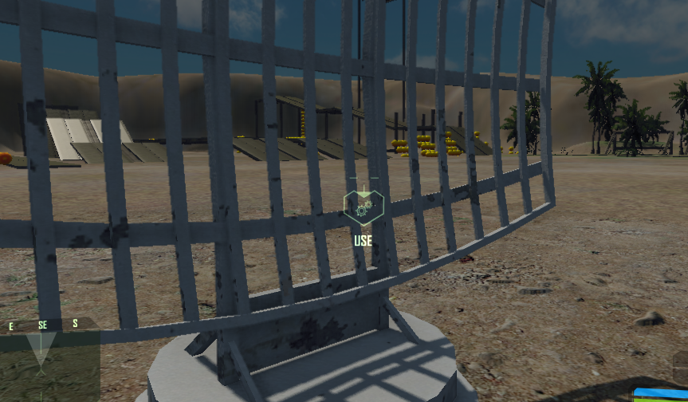

Overview
The player actor implementation has the possibility of interacting with entities using a key press ('F' by default). Entities which can be interacted with, will enable a special icon on-screen inside the game to inform the player.

Preparing the Script
MakeUsable(NewEntity)
function NewEntity:IsUsable(userId)
-- code implementation
return index;
end
function NewEntity:OnUsed(userId, index)
-- code implementation
end
Implementing IsUsable
The IsUsable function is called when the player is aiming his cross-hairs towards the entity. The function will determine if the entity can be used by the player which requested it. The function only accepts one parameter which holds the EntityId of the player who attempts to use the entity.
The function can return 0 in case that the player is denied usage of the entity. By returning 0, the UI won't render icon "USE" over the entity.
In case the entity can actually be used, a positive value should be returned. The value will be saved and later used when calling the OnUsed function.
Implementing OnUsed
The OnUsed function is called when the player presses the Use key ('F' by default). The first parameter is the EntityId of the player who requested to use the entity. A second parameter is passed with the same value returned by IsUsable.